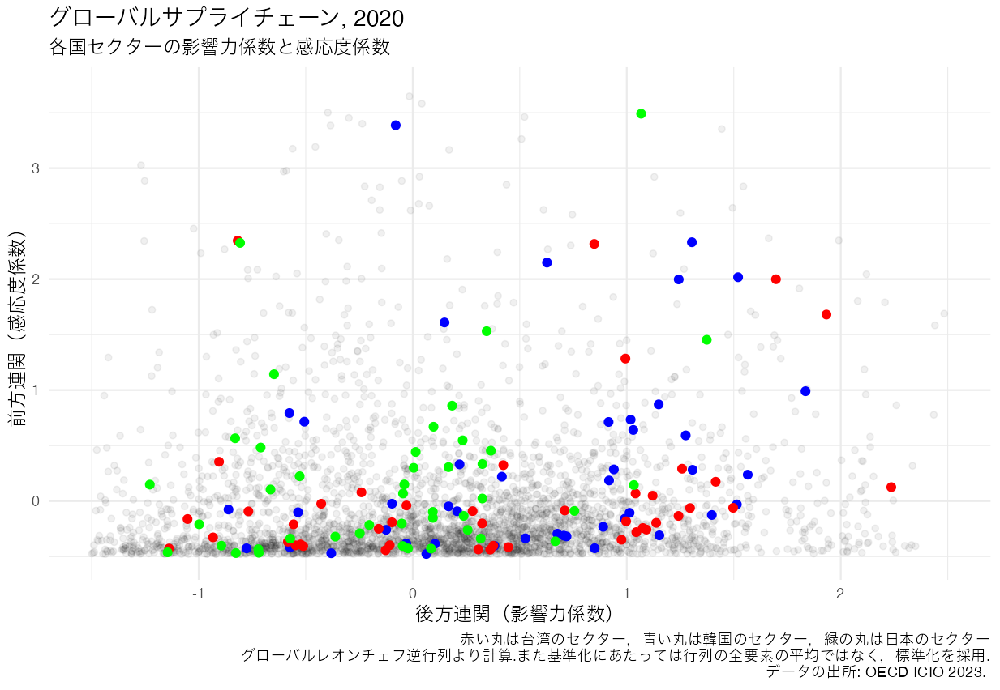

# exvatoolsのインストール
install.packages("exvatools")
# exvatoolsのロード
library(exvatools)5 産業連関データ
本項では、産業間の投入・産出関係を捉える投入産出データを読み込み，分析を容易にするRパッケージを紹介します。Rは行列計算に優れており、もともと投入・産出分析と親和的です。

5.1 国際産業連関分析ツール - exvatools1
今日の国際貿易においては生産工程のグローバル化にともない中間財の輸出入が完成品の輸出入以上に盛んに行われています。従来の貿易統計ではそうしたグローバリゼーション現象を十分に捉えることはできませんでした。貿易統計では輸入品の最終出荷地をその原産地として記録します。有名なiPhoneの例では中国が最終出荷地（原産地）ですが，iPhoneという完成品が部品を含めてすべて中国で製造されたかのように扱うことは，生産工程がグローバル化した現代では妥当な取り扱いとは言えません。異なる国の異なるセクターが互いにどのように相互作用しているかを捉えるためには国際産業連関表を利用した付加価値貿易の分析が不可欠です2。
簡単な数値例で考えてみましょう。中国が日本から90ドル分の中間財タッチパネルを輸入し、アメリカに最終完成製品iPadを100ドルで輸出したとします。これまでのグロスベースの貿易統計では日本の貿易統計には中国への輸出によって生み出された90ドルの価値が計上されます。同時に、中国の貿易統計にはアメリカに完成品iPadを輸出したことによって100ドルの価値が計上されます。この場合、日本が生み出した90の付加価値が、中国の輸出にも含まれて計算され、二重に計上されてしまいます。付加価値貿易では日本の90、中国の（二重計算を避けた）10の付加価値が別個に計上され、各々がアメリカへの輸出となります。
本項で紹介するRパッケージexvatoolsはこれまで紹介してきたようなデータへのアクセス・取得のツールではではありませんが，付加価値貿易の分析を容易にする数多くの機能を備えた非常に優れたパッケージです3。
exvatoolsは以下の投入産出表を扱うことができます：
- OECDの付加価値取引データベース(TiVA)が基づいているOECD諸国間の投入産出表(OECD Inter-Country Input-Output: ICIO)
- 世界投入産出表(WIOD)
- FIGARO EU投入産出表(EU IC-SUIOT)
- ADBマルチリージョン投入産出表(ADB MRIO)
5.1.1 exvatoolsのインストールと投入産出行列の作成
exvatoolsは，(1)標準的な国際的な投入産出表の原データ, (2) exvatoolsパッケージに含まれるテストデータ, (3)カスタムデータの３種類のデータから基本的な投入産出行列－投入係数行列やレオンチェフの逆行列など－のリストを作成します。
もちろん学習目的にはパッケージ付属の(2)の投入産出データも有益ですが，じっさいに分析に利用するのは(1)標準的な国際的な投入産出表の原データだと思われます。以下の説明では(1)の取り扱いを紹介して行きます。上述のように，exvatoolsでは現在４つのソース－OECD ICIO, WOID, EU IC-SUIOT, およびADB MRIO－がサポートされています。データはカンマ区切りファイル(.csv)、Excelファイル(.xlsx)、またはRデータファイル(.rData)を含む圧縮ファイルとしてサポート機関のWebページに公開されており，直接ダウンロードできます。
1) OECD ICIO
OECD ICIOテーブルを使用する場合は、ICIO Webページからソースファイル2016-2020.zipをコンピュータにダウンロードします。ここで注意を要するのは，make_wio()関数を利用したwioクラスのオブジェクトの作成にあたってはダウンロードしたファイルがzip形式でなければならないということです。そこでzipを解凍せずに，フォルダに保存します。
それではevatoolsのmake_wio()コマンドを使用し，ソースファイルすなわちダウンロードしたzipファイルから標準的な投入産出行列を作成します。make_wio()の基本的な文法は次のようになります：
make_wio(
wiotype = " ",
year = NULL,
src_dir = NULL,
quiet = FALSE
)make_wio( )は上述のように，５つの引数をとりますが，とくにwiotypeが重要です。wiotypeの引数は具体的には以下のようになります,
wiotype = " "には利用する投入産出表の名称と版editionを指定する，以下のような文字列を入力します：OECD ICIO表の2023年版（1995-2020年）については
"icio2023"，同一版の小型版については"icio2023s"2016年版WIOD表（2000-2014）については
"wiod2016". 長期WIOD表（1965-2000年）の2022年版については"lrwiod2022". 後者は歴史分析に有益.FIGARO EU投入産出表（EU IC-SUI）の2023年版, industry-by-industry(2010-2021)については
"figaro2023i", また同データベースのproduct-by-productバージョンについては"figaro2023p".2023年版の62カ国ADB MRIO表の2023版については
"mrio2023", 不変価格の同一版については"mrio2023k", 72カ国版（2022年まで）については"mrio2023x".
year = : 参照年を指定する整数を入力. NULL(デフォルト)の場合，利用可能な最新年が指定される.
src_dir = : 国際投入産出表のソースファイルが保存されているユーザーのディレクトリ（フォルダ）を指定する文字列を入力. ソースファイルは通常
zipファイルもしくはcsv, xlsxファイル.make_wio()を利用するさいにはファイルの名称を変更しないこと. またscr_dirが指定されない場合，make_wio()は作業ディレクトリ内を探します.
以下の例では，wiotypeに”icio2023”, yearに”2020”, src_dirに”C:/Users/data”（ソースzipファイルが保存されている架空のフォルダ）を指定しています。
wio <- make_wio(wiotype = "icio2023",
year = 2020,
src_dir = "C:/Users/data")これによってexvatoolsが，zipファイルから.csvファイルを取り出し，基本的な投入産出行列を作成します。そしてデータを割り当て演算子（←）によってwioと名付けたオブジェクトに格納しています。これによって基本的な投入産出テーブルのリストからなるwioクラスオブジェクトが作成されます。。
作成されたwioオブジェクトの内容はsummary()関数でチェックできます。
summary(wio)summary(wio)の実行によって以下のリストがコンソール画面に表示されます.

3645x3645次元の中間財投入行列Zをはじめとし，投入産出分析で利用される行列が作成されます。たとえば，以下の例で利用するグローバル・レオンチェフ逆行列はBという名前になっています。コンソール画面を下にスクロールすると，81カ国，45のセクターが利用可能であることが分かります。また，需要項目として6つが提供されていることも分かります。
2) 世界投入産出表WIOD
WIODについては”wiod2016”（バージョン2016、2000年から2014年）、“wiod2013”、“lrwiod2022”（ロングランWIOD表、バージョン2022、1965年から2000年）が含まれています。これらはすべて、フローニンゲン大学のGrowth and Development CentreのWebページから入手可能です。
OECD ICIOの場合と同様に，ダウンロードしたzipファイルを自分のPCのワーキングディレックトリに保存しておきます。以下の例ではmake_wio()関数の引数src_dir() = NULLです，つまり指定していません。指定しない場合，make_wio()は現在のワーキングディレクトリをチェックします。
wiod <- make_wio(wiotype = "wiod2016", year = 2014)これによりwioクラスのリスト（基本的な投入産出行列のリスト）を容れたオブジェクトwiodが作成されます。summary()で確認してみましょう。
summary(wiod)
3) FIGARO EU投入産出表
FIGARO EU投入産出テーブルでは製品×製品product by productと産業×産業industry by industryの２つが利用可能です。ここでの例ではproduct by productを利用します。最初に，WebページFigaro tables: EU inter-country supply, use and input-output tables→ CSV matrix format (FIGARO 2023 edition)→ Annual EU inter-country input-output tables product by producto の2021をダウンロードし，作業ディレクトリに保存しておきます。ファイル名はmatrix_eu-ic-io_prod-by-prod_23ed_2021.csvです。
2つのFIGARO EU投入産出テーブルに対応して引数wiotypeには次のいずれかを指定します。
product by productの場合 wiotype = “figaro2023p”
industry by industryの場合 wiotype = “figaro2023i”
ここではproduct by productを利用しますから，引数wiotype = "figaro2023p"を入力します。これによってcsvファイルからmake_wio()関数が投入産出分析のために必要な基本的な行列を作成します。
figaro <- make_wio(wiotype = "figaro2023p", year = 2021)figaroと名前をつけたオブジェクトの中に基本的な行列が保管されます。結果をsummary(figaro)でみると，次のような行列の一覧が表示されます。

4) ADB MRIO投入産出表
最初に，ADB Multiregional Input-Output Databaseからデータをダウンロードします。ADBではxlsx形式でデータが提供されています。ここでの例ではADB, MRIO, 62economicesバージョンの"ADB MRIO(2014)(Updated on June 2022)"xlsxファイルをダウンロードします。その上で，make_wio()関数を使って行列を作成し，mrioと名前をつけたオブジェクトに容れます。
mrio <- make_wio(wiotype = "mrio2023", year = 2014)summary(mrio)を使って行列のリストを表示させると，以下のようになります。

最後に他の投入産出データを読み込む際にも利用するmake_wio()関数の引数wiotypeに指定するzipファイル（もしくはcsv, Excelファイル名）とエジション名の対応をまとめておきます。
| 機関名 | zip名（csv, xlsxファイル名） | エジション名 |
|---|---|---|
| OECD ICIO | xxxx-xxxx.zip | “icio2023” |
| OECD ICIO | ICIO_XXXX-XXXX.zip | “icio2021” |
| OECD ICIO | ICIO2018_XXXX.zip | “icio2018” |
| OECD ICIO | ICIO2016_XXXX.zip | “icio2016” |
| WIOT | WIOTS_in_R.zip | “wiod2016” |
| EU | matrix_eu-ic-io_prod-by-prod_23ed_2021.csv | “figaro2023p” |
| EU | matrix_eu-ic-io_ind-by-ind_23ed_2021.csv | “figaro2023i” |
| ADB | ADB-MRIO-2014_Mar2022.xlsx(62カ国版) | “mrio2023” |
| ADB | ADB-MRIO-2014_(72カ国版) | “mrio2023x” |
| ADB | ADB- | “mrio2023k” |
ここまで４つの投入産出テーブルをダウンロードし，make_wio()関数を使ってダウンロードしたデータから投入産出分析に必要な行列の作成方法を示してきました。次に，そうした行列を使ったいくつかの操作の例を示して行きます。
5.1.2 投入産出行列を操作する
exvatoolsは、国際投入産出表を取り扱う操作を容易にする複数のコマンドを提供しています4。一例を示すと次のような関数があります：
dmult()：対角行列を行列によって乗数倍する.multd()：行列を対角行列によって乗数倍する.hmult()：行列のアダマール積bkd()：ブロック対角行列－対角ブロックがゼロではなく，非対角ブロックがゼロである行列－を作成.bkoffd()：ブロックオフ対角行列－対角ブロックがゼロであり，非対角ブロックがゼロでない行列－を作成.rsums(): 行を合計するcsums(): 列を合計するsumnrow(): 行列のn番目の行を合計するsumncol(): 行列のn番目の列を合計する
こうした関数を利用して実際に産業連関表を使って作業してみます。以下の例ではOECD ICIOの投入産出テーブルから作成した，オブジェクトwioに格納された行列を利用し，逆行列の操作，付加価値輸出の計算を行っています：
- 例1 グローバル・レオンチェフの逆行列
- 例2 付加価値輸出
例1 グローバル・レオンチェフ逆行列
レオンチェフ逆行列を利用した需要誘発モデルの基本的な行列は、すでに示したコマンドmake_wio()によって原データから簡単に取得できます。
wio <- make_wio(wiotype = "icio2023", year = NULL, src_dir = NULL, quiet = FALSE)summary(wio)の表示内容をみると、Bがグローバル・レオンチェフ逆行列（Global Leontief inverse)であり、またYが最終需要です。BもYもmake_wio()関数で作成された行列です。class()関数でオブジェクトwioがwioクラスであり，BもYも行列であることを確認できます。なお，wio$Bは「wioオブジェクトの中の行列B」を指しています。

レオンチェフ逆行列は，最終需要が1単位増加したときに，直接間接に誘発される生産量を示します。したがってグローバル・レオンチェフ逆行列はある国のあるセクターにおいて最終需要が1単位増加したときに，他セクターの生産量がどれだけ誘発されるか－簡単に言えば，他産業の生産に与える影響の大きさ－を示します。
make_wio()関数で作成された行列リストにおいて，Aが投入係数行列，Xが生産，最終需要がYです。したがって国際投入産出テーブルは
\(AX + Y = X\)
と表現できます。ここから最終需要と生産の関係は
\(X = (I-A)^{-1}Y\)
この関係は技術を一定とし，一定水準の最終需要Yのために必要とされる，各国の各セクターの産出高Xがいかにして生み出されるかを示しています。ここで\((I-A)^{-1}\)はグローバル・レオンチェフ逆行列であり，作成された行列リストにおいてはBで表記されています。したがって生産Xはグローバル・レオンチェフ逆行列Bと最終需要Yの積と同じになります。
行列の積の演算子は%*%です。レオンチェフ逆行列と最終需要の積で生産を求めます。そしてその結果をBYと名前をつけたオブジェクトに容れます。BYも行列です。
BY <- wio$B %*% wio$YBYとXが一致することを確認してみてください。
グローバル・レオンチェフ行列の行和と列和
次に，グローバル・レオンチェフ行列の行和を求めみます。このためにはrsums()関数を利用します。文法は以下のようになります：
rsums(df, col_name = NULL)・引数dfは行と列を持つ行列の名前を入力します。
・引数col_nameは作成される列につけられる名前・文字列です。
これを使ってグローバル・レオンチェフ行列の行の合計を求めます。 wio$Bは”オブジェクトwioの中の行列B”を意味します，またcol_name =で列の名前をFLにしています。
# グローバル・レオンチェフ行列の行和
rsums(wio$B, col_name = "FL")これによってセクターと各行の和を得ることができます。たとえば，以下の表ではARG_01T02はアルゼンチン（ARG）の’Agriculture, hunting, forestry’産業, ARG_03は同じくアルゼンチンの’Fishing’産業を意味しています。2021版ではISIC Rev.4をベースにした45産業、17製造業セクター,20サービス産業セクターのデータが収録されています。

この行の和を行和全体の平均値で除した比率は「感応度係数」と呼ばれています。
列和もcsums()関数を使って同じように求めることができます。
# グローバル・レオンチェフ行列の列和
csums(wio$B, row_name = "BL")これによって１行×3645列の，各国の各産業に対応する列和が得られます。レオンチェフ逆行列の列和は後方連関(backward linkage)指数として知られているものです。ちなみに，この産業別の列和を列和全体の平均値で除した比率を求めると，「影響力係数」が求めることができます。
例2 付加価値輸出を計算する
国外に吸収される付加価値(付加価値輸出)を計算するには、1)対角化された付加価値係数行列（wioではWによって表記）をグローバル逆行列Bをによって乗数倍し，2)その結果を最終需要行列Yをによって乗数倍します。こうした操作によって最終需要によって誘発される付加価値が計算できます。
1)の操作には対角行列と行列の積が必要となります。このためにはdmult()関数を利用します。使い方は
dmult(matrix1, matrix2)
# matrix1は対角行列
# matrix2は通常の行列dmult()関数は対角行列matrix1をベクトルに変換します、つまり対角行列matrix1を、matrix2のすべての行によって水平に乗数倍します。
2) 需要によって誘発されるすべての付加価値を計算するために最終需要Yを掛けます:
VBY <- dmult(wio$W, wio$B) %*% wio$Yこれによって海外に吸収される付加価値の大きさが分かります。3645行（各国の産業部門数）×77列（Rest of Worldを含めた国の数）の大きな行列であるためコンソール画面では見づらいためViw(VBY)関数によって表示してみます。

また海外に吸収される付加価値だけに注目する場合，VBY行列のうちの非対角行列ブロックの表示だけで十分です。その表示ためにはbkoffd()関数を利用します。
bkoffd(VBY)これによって対角行列部分，たとえばアルゼンチンの産業を示す行とアルゼンチンという国を示す列のセルはゼロとなり，非対角部分の値だけが表示されます。
5.1.3 輸出における付加価値を分解する - 韓国の例
輸出に体化された付加価値の分解にあたっていくつかの方法が提案されていますが，以下のようなステップで分解されます：
最初に総輸出(Gross Exports: EXGR)を，国内コンテンツ（Domestic Content: DC）と外国コンテンツ（Foreign Content: FC）とに分離し、次に国内付加価値（Domestic Value Added: DVA）と外国付加価値（Foreign Value Added: FVA）を特定し、これらを国内ダブルカウント（Domestic Double Counting: DDC）と外国ダブルカウント（Foreign Double Counting: FDC）から分離します。そして最後に国内付加価値を，輸出された付加価値（Value added exported: VAX）とリフレクション（Reflection: REF）とに分割します（以下の図参照）。

exvatoolsを使って韓国の付加価値輸出の分解をおこなってみましょう。このためには関数make_exvadec()を使います。この関数によって異なった分解方法を使ってある１つの国もしくは国グループの輸出における付加価値を分解することができます。文法は以下のようになります：
make_exvadec(
wio_object,
exporter = "all",
method = "bm_src",
output = "standard",
quiet = FALSE
)基本的な引数は５つです。
wio_object:
make_wio()関数を使って取得したwioクラスのオブジェクト（標準的な世界投入産出表）を指定.exporter: 国または国グループを示す文字列（たとえば，“USA”,“NAFTA”など）. デフォルトは”all”であり，利用できるすべての国に関して輸出における付加価値の分解を生み出す.
method: 輸出付加価値export VAの分解方法を指定する文字列.分解法としては以下の方法が利用可能.
“bm_src”: Borin and Mancini(2023)にもとづく分解法. ソースベース. デフォルト
“bm_snk”: Borin and Mancini(2023)にもとづく分解法. sinkベース.
“wwz”: Wang et al. (2013)にもとづく分解法
“kww”: Koopman et al. (2014)にもとづく分解法
“my”: Miroundot and Ye (2021)にもとづく分解法
“oecd”: OECD
output: アウトプットタイプを指定する文字列. 7つのアウトプットが用意されているが，“standard”(デフォルト)で十分.output = “standard”によって
DC,DVA,DDC,FC,FVA,VAXが出力される.quiet : ブール値であり，TRUEの場合，メッセージは非表示. デフォルトはFALSEである。つまりメッセージが表示される.
それではmake_exvadec()関数を使って韓国の付加価値輸出の分解をおこなってみます。
kor_exvadec <- make_exvadec(wio, exporter = "KOR", method = "bm_src")これを実行すると，韓国の付加価値分解の結果が表示されると同時に，結果がkor_exvadecと名付けたオブジェクトの中に格納されます。

結果から総輸出(EXGR)を100パーセントとした場合，付加価値輸出(VAX)が69.4パーセントと高い割合を占めることが理解されます。韓国経済においては最終完成品の輸出よりも，中間財・部品の輸出の価値がきわめて高水準だということが推測されます。さらに，グローバルバリューチェーンに関連した貿易(GVC)が47.37パーセントを示しており，韓国経済がグローバルサプライチェーンに大きく関わっていることも分かります。
exvatoolsの優れた点として分解を行なったのち，さらにget_exvadec_bkdown()関数を使ってセクターや仕向け国destinationを指定することもできます。以下の例はセクターとして製造業 “NANUF”，仕向け国 importerとして中国 “CHN”を指定しています。
get_exvadec_bkdown(kor_exvadec, exporter = "KOR",
sector = "MANUF", importer = "CHN")これを実行すると，中国に向けた製造業輸出の付加価値分解が可能となります。

結果を見ると，中国への韓国製造業の輸出総額のうち66.80が付加価値輸出だということが理解できます。
OECDのTiVAデータベースと同様の一般的な貿易指標（輸出，輸入，付加価値，生産等）のリストを取得したい場合は引数にmethod = "oecd", output = "tiva"とし、make_exvadec()を実行すると、取得できます。
kor_tiva <- make_exvadec(wio,
exporter = "KOR",
method = "oecd",
output = "tiva")
ここにはGVCへの参加度指標も出力されます。自国で生産された中間財が，国外の輸出財生産により多く投入されることはGVCへの前方への参加度が高い理解され，GVCへの前方参加度(Forward participation in GVC)と呼ばれます。他方，自国の輸出財の生産にあたって輸入中間財がより多く投入されることはGVCへの後方への参加度が高いと解釈されます。これはGVCへの後方参加度(Backward participation in GVC) と呼ばれます。
韓国の例をみると，GVCへの後方参加度は29.70, 他方GVCへの前方参加度は21.66であり，いずれの参加度も比較的高いのですが，後方への参加度の方が高く，韓国経済の輸出財生産にあたっては他国からの輸入中間財が多く投入されていることが理解できます。
5.1.4 付加価値の原産地originと目的地destination
make_exvadec()の分解では、付加価値がどこで生み出され(origin)、どこに行き着く(destination)かを分析することはできませんが，make_exvadir()関数を利用すれば、この点も分析できます。
ふたたび、韓国の例を使って考えてみます。韓国の輸出における外国コンテンツForeign Content in VA(FC)は171125.82でした。この国外コンテンツ(FC)はどこから来たのでしょうか。付加価値輸出の地理的な原産地、セクター別原産地の情報はmake_exvadir()で取得できます。
kor_exvadir <- make_exvadir(wio,
exporter = "KOR",
va_type = "FC",
flow_type = "EXGR")summary(kor_exvadir)によって詳細を表示させると、

出力結果をみると，原産地origin国としてROWも含めて77カ国，セクターとしては45セクターが利用可能であることが分かります。
FCデータはオブジェクトkor_exvadirの中に収納されており，kor_exvadir$FCで表示させることができます。head()関数を使って最初の数行だけ出力します。
kor_exvadir$FC |> head()
これによって韓国の付加価値輸出における外国コンテンツ(FC)がどの国の，どのセクターから生まれたものかが理解できます。
Footnotes
Feas E (2024). exvatools: Value Added in Exports and Other Input-Output Table Analysis Tools. R package version 0.8.0, https://CRAN.R-project.org/package=exvatools.↩︎
付加価値貿易の分析については猪俣哲史著『グローバル・バリューチェーン－新・南北問題へのまなざし』日本経済新聞社，2019を参照してください。↩︎
exvatoolsの利用法については開発者Feas E (2023) exvatools: Value Added in Exports and Other Input-Output Table Analysis Tools, R Journal Vol. 15/4にもとづいています。↩︎
詳細についてはexvatoolsのReference manualを参照してください。↩︎